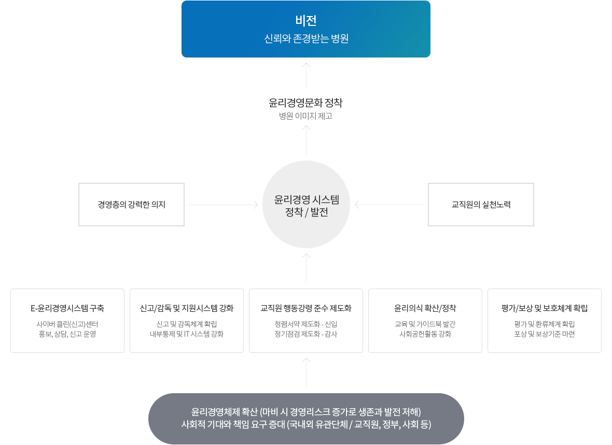

@@include('../inc/head.html')
@@include('../inc/header.html')
@@include('../inc/location.html')
윤리경영 추진전략
윤리경영 목표와
추진단계
- 비전 : 신뢰와 존경받는 병원
- 전략목표 : 병원윤리문화 정착
단계별 추진내용
-
Step01
윤리경영 도입 (`06년도)
- 윤리기준(강령/지침) 제정
- 제도적 기반 구축
- 윤리의식 고취
-
Step02
윤리경영 정착 (`07년도)
- 제도정착 및 개선
- 윤리의식 공유 및 확산
- 사회공헌활동 구축
-
Step03
윤리경영 발전 (`08년도~)
- 제도의 활성화
- 병원윤리 풍토 조성
- 제도와 연계된 홍보

추진체계 안내
- 윤리경영체제 확산 (마비 시 경영리스크 증가로 생존과 발전 저해) 사회적 기대와 책임 요구 증대 (국내외 유관단체 / 교직원, 정부, 사회 등)
-
- E-윤리경영시스템 구축 : 사이버 클린(신고)센터, 홍보, 상담, 신고 운영
- 신고/감독 및 지원시스템 강화 : 신고 및 감독체계 확립, 내부통제 및 IT 시스템 강화
- 교직원 행동강령 준수 제도화 : 청렴서약 제도화 - 신입, 정기점검 제도화 - 감사
- 윤리의식 확산/정착 : 교육 및 가이드북 발간, 사회공헌활동 강화
- 평가/보상 및 보호체계 확립 : 평가 및 환류체계 확립, 포상 및 보상기준 마련
-
- 윤리경영 시스템, 정착 / 발전
- 윤리경영문화 정착, 병원 이미지 제고
- 비전 : 신뢰와 존경받는 병원
-
이사회
-
병원장
-
윤리위원회
- 위원장 : 병원장
- 기능 : 윤리기준 제정 및 평가
-
윤리강령 책임자
- 진료부문 : 진료부원장
- 행정부문 : 행정부원정
-
법무팀
- 부패방지대책 수립 및 책임자 지원
- 부서 교육 / 홍보 / 점검
-
실/센터/과/팀 부서장
(전교직원)
- 부서 부패방지대책 수립
- 대책추진 및 실적 제출
사후감사
법무팀
@@include('../inc/footer.html')